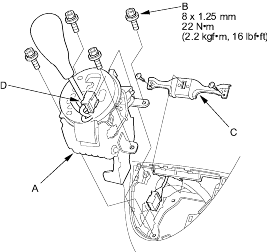
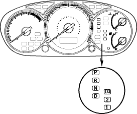
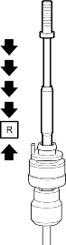

- Cover around the opening of the console with tape or equivalent to prevent damage to the console.
- Install the shift lever assembly (A) in the console and secure it with the bolts (B).

- Install the bracket (C).
- Connect the D3 switch/shift lock solenoid connector (6P) (D) and install it on the shift lever bracket.
- Turn the ignition switch ON (II) and verify that the
 position indicator light comes on.
position indicator light comes on.

- If necessary, push down the shift cable until it stops, then release it. Pull the shift cable back one step so that the shift cable is in

- Turn the ignition switch OFF.
- Insert a 6.0 mm (0.24 in.) pin (A) into the positioning hole on the shift lever bracket base through the positioning hole on the sift lever assembly. The shift lever is secured in position.